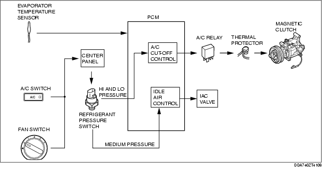
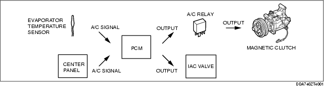
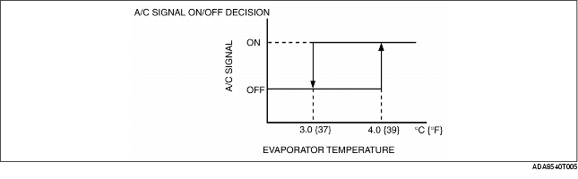

MANUAL AIR CONDITIONER CONTROL SYSTEM
id074000101000
Block Diagram
• The function of center panel has been included into the PCM.
• The evaporator temperature sensor sends a evaporator temperature signal to the PCM.
• The A/C switch and fan switch send an A/C signal to the PCM via the refrigerant pressure switch (HI and LO pressure).
• The refrigerant pressure switch (medium pressure) sends an idle-up signal to PCM.
• When the PCM receives those signals, it sends operating signals to the A/C relay and IAC valve based on A/C cut control and idle air control.

Outline of Control System
• Manual air conditioner defroster control and A/C compressor control.
|
Control name
|
Control part
|
|
A/C compressor control
|
Center panel
|
A/C Compressor Control
• The function of the center panel has been included into the PCM.
• When the PCM receives those signals, it sends operating signals to the A/C relay and IAC valve based on A/C cut control and idle air control.

A/C signal on/off control
-
• The PCM turns the A/C signal (magnetic clutch) on and off based on the temperature of the air passing through the evaporator when the A/C and fan switches are on. This keeps the evaporator surface temperature within the specified range, preventing the evaporator from freezing while the fan switch and A/C switch are turned on.
